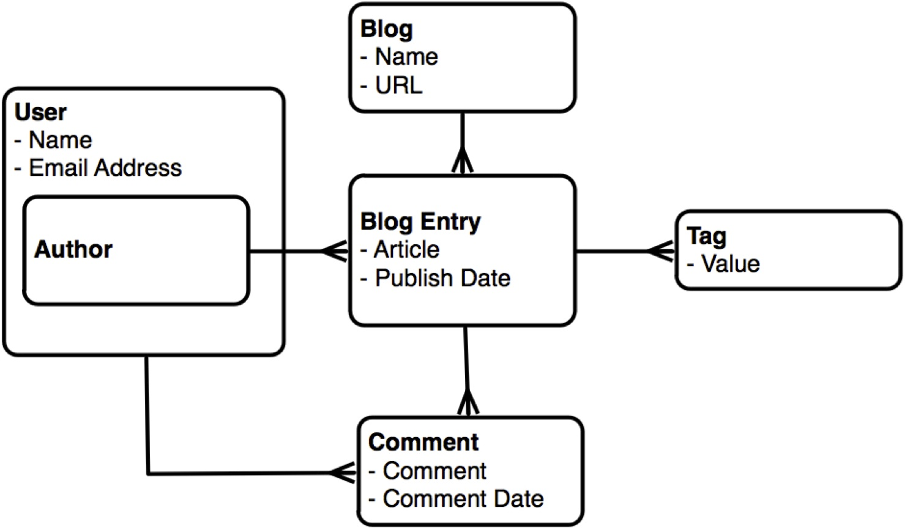
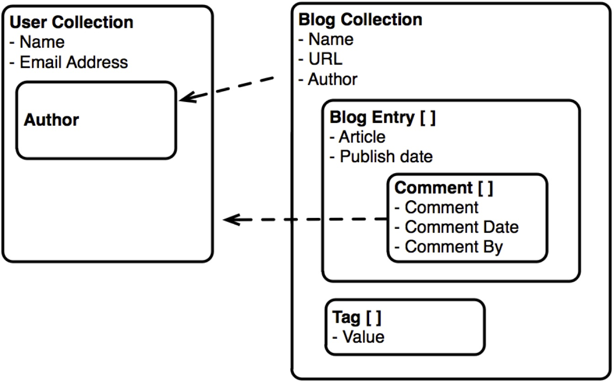

HS Augsburg Datenbanken
20.11.2013
Datenbanken
LevelDB - levelup/level
LevelDB
LevelDB is a fast key-value storage library written at Google that provides an ordered mapping from string keys to string values. (https://code.google.com/p/leveldb/)
Features
- embedded Key-Value Store
- sortiert nach keys
- values werden mit "Snappy" komprimiert
- besteht aus C++ Bibliothek
- kein eigener Server-Prozess nötig
- Basis für Chromes IndexedDB
- Operations: Get(), Put(), Del()
LevelUp
var db = levelup('/path/to/database')
db.put('key', 'value', function (err) { /* ... */ })
db.get('key', function (err, value) { /* ... */ })
db.del('key', function (err) { /* ... */ })
db.close(function (err) { /* closed */ })// multiple atomic writes with batch()
var operations = [
{ type: 'put', key: 'Franciscus', value: 'Jorge Bergoglio' }
, { type: 'del', key: 'Benedictus XVI' }
]
db.batch(operations, function (err) { /* ... */ })Names Beispiel
var levelup = require('level')
var db = levelup('/db/names.db')
db.batch([
{ type: 'put', key: 'Michael', value: 'm'},
{ type: 'put', key: 'Michaela', value: 'f'},
{ type: 'put', key: 'Michail', value: 'm'}
], function(err) {
if(err) { console.log(err.message); }
});db.get("Michael", function(err, value) {
console.log("Michael > " + value);
});
Michael > mStreams
db.createReadStream()
.on('data', console.log);
{ key: 'Michael', value: 'm'},
{ key: 'Michaela', value: 'f'},
{ key: 'Michail', value: 'm'}db.createReadStream({ keys: true, values: false }).pipe(process.stdout);
Michael
Michaela
MichaelFilter
db.createReadStream({ start : 'Michaela' })
.on('data', console.log);
{ key: 'Michaela', value: 'f'},
{ key: 'Michail', value: 'm'}db.createReadStream({ start : 'Mi' })
.on('data', console.log);
{ key: 'Michael', value: 'm'},
{ key: 'Michaela', value: 'f'},
{ key: 'Michail', value: 'm'}LevelDB
- klare, einfach API (put, get, del, batch)
- keine Server-Installation nötig
- sehr schnelle Reads & Writes
- erweiterbar durch node-module
- austauschbares Backend (indexedDB im Browser)
- leider Probleme unter Windows
MongoDB - mongoose
MongoDB (from "humongous") is an open-source document database, and the leading NoSQL database. (http://www.mongodb.org/)
Relationale-Datenbank
Dokumenten-Datenbank
MongoDB
- Table -> Collection
- Row -> Document
- keine Joins
- verschachtelte Dokumente möglich
- Embedding für 1:n
- Linking für n:m
mongoose
var mongoose = require('mongoose');
mongoose.connect('mongodb://localhost/test');
var CatSchema = mongoose.Schema({
name: String
});
var Cat = mongoose.model('Cat', CatSchema);
var kitty = new Cat({ name: 'Zildjian' });
kitty.save(function (err) {
if (err) // ...
});mongoose
- ORM für MongoDB
- Schemata für Dokumente
- Models mit getter, setter, default
- Validierung
Schema
var mongoose = require("mongoose");
var db = mongoose.connect("mongodb://localhost/test");
var BlogSchema = mongoose.Schema({
title : {
type : String,
required : true,
unique : true
},
createdAt : {
type : Date,
"default" : Date.now
}
});
//Blog-Model mit Schema BlogSchema registrieren
var Blog = mongoose.model('Blog', BlogSchema);Validierung
var BlogSchema = mongoose.Schema({
title : {
type : String,
validate : function(title) { return title.length > 10; }
unique : true
},
entries : [BlogEntrySchema] //Array vom Typ BlogEntry
createdAt : {
type : Date,
default : Date.now,
required : true
}
});- definiert im Schema
- fertige Validatoren (required/enum/min/max...)
- eigene Validatoren (sync oder async)
- automatische Validierung bei model.save()
- manuell durch model.validate()
model.save()
//wir holen uns das vorher registrierte Blog-Model
var Blog = mongoose.model('Blog');
//wir erstellen eine Blog-Instanz
var hsaNodeBlog = new Blog({ title : "hsaNode"});
//und... speichern!
hsaNodeBlog.save(function(err, createdBlog) {
if(err) { throw err; }
console.log("Blog created: " + createdBlog);
});Blog created:
{
__v: 0,
title: 'hsaNode',
_id: 518c04f9785a558630000001,
createdAt: Thu May 09 2013 22:20:09 GMT+0200 (CEST)
}find / findOne / findById
Blog.findOne({ title : "hsaNode"}, function(err, hsaNodeBlog) {
if(err) { throw err; }
console.log("found blog: ", hsaNodeBlog);
});found blog:
{
title: 'hsaNode',
_id: 518c03ee361b296230000001,
__v: 0,
createdAt: Thu May 09 2013 22:15:42 GMT+0200 (CEST),
entries: []
}find / findOne / findById
Blog.findById(518c03ee361b296230000001, ...)
//-> gibt ein Dokument zurück
Blog.find({ title : "hsaNode" })
// -> gibt array zurück
Blog.findOne({ title : "hsaNode" })
// -> gibt ein Dokument zurück
Blog.count({ title : "hsaNode" })
// -> 1 Update
//via find & Dokument bearbeiten
Blog.findOne({ title : "hsaNode"}, function(err, hsaNodeBlog) {
//das Dokument direkt modifizieren
hsaNodeBlog.title = "HSA Node.js Blog";
//das veränderte Dokument abspeichern
hsaNodeBlog.save(function(err, savedNodeBlog) {
console.log(savedNodeBlog); //geändertes Dokument
});
});//direkt per Update
Blog.update(
{ title : "hsaNode" }, // welche(s) Dokument(e)?
{ title : "HSA Node.js Blog" }, // was soll geändert werden?
function(err) {
...
});oder...
- Model.findOneAndUpdate
- Model.findByIdAndUpdate
Remove
//via find & Dokument löschen
Blog.findOne({ title : "hsaNode"}, function(err, hsaNodeBlog) {
//das gefundene Objekt löschen
hsaNodeBlog.remove(function(err) {
...
});
});//direkt per Remove
Blog.remove(
{ title : "hsaNode" } // welche(s) Dokument(e)?
function(err) {
...
});oder...
- Model.findOneAndRemove
- Model.findByIdAndRemove
Embedded Documents
var BlogEntrySchema = mongoose.Schema({
author : String,
body : String
});
var BlogSchema = mongoose.Schema({
title : {
type : String,
required : true,
unique : true
},
entries : [BlogEntrySchema] //Array vom Typ BlogEntry
createdAt : {
type : Date,
"default" : Date.now
}
});Embedded Documents
Blog.findOne({ title : "hsaNode"}, function(err, hsaNodeBlog) {
var entry = {
author : "meaku"
body : "mongoose yeah!"
};
hsaNodeBlog.entries.push(entry);
//speichern immer nur auf dem "Haupt-Dokument"
hsaNodeBlog.save(function(err, savedNodeBlog) {
console.log(savedNodeBlog);
});
});{
title: 'hsaNode',
_id: 518c03ee361b296230000001,
__v: 1,
createdAt: Thu May 09 2013 22:15:42 GMT+0200 (CEST),
entries:
[ { author: 'meaku',
body: 'mongoose yeah!',
_id: 518c09bc44a3b44131000002 }
]
}Embedded Documents
{
title: 'hsaNode',
_id: 518c03ee361b296230000001,
__v: 1,
createdAt: Thu May 09 2013 22:15:42 GMT+0200 (CEST),
entries:
[ { author: 'meaku',
body: 'mongoose yeah!',
_id: 518c09bc44a3b44131000002 },
{ author: 'jhnns',
body: 'mongoose ftw!',
_id: 518c09bc44a3b44131000003 }
]
}Blog.findOne({ title : "hsaNode"}, function(err, hsaNodeBlog) {
//hsaNodeBlog.entries = Array
//zugriff übers array
var mgYeahEntry = hsaNodeBlog.entries[0];
//oder über subquery auf id (geht nur mit id)
mgYeahEntry = hsaNodeBlog.entries.id(518c09bc44a3b44131000002);
});Queries
{
title: 'hsaNode',
_id: 518c03ee361b296230000001,
__v: 1,
createdAt: Thu May 09 2013 22:15:42 GMT+0200 (CEST),
entries:
[ { author: 'meaku',
body: 'mongoose yeah!',
_id: 518c09bc44a3b44131000002 }
],
tags : ["mongoose", "yeah"]
}//dot-Notation
Blog.findOne({ "entries.author": "meaku" }, callback)//query
Blog.find().find({ title : "hsaNode" })
.where("entries.author").equals("meaku") //zugriff auf unterattr.
.where("age").lt(Date.now) //lt = lower then
.where("tags").in(["mongoose", "yeah"]) //array check
.limit(10) //wie viele werte
.sort("-createdAt") //sort createdAt absteigend
.select("title entries") //welche attr. brauchen wir
.exec(callback); //query ausführen
Population
var personSchema = Schema({
_id : Number,
name : String,
age : Number,
stories : [{ type: Schema.Types.ObjectId, ref: 'Story' }]
});
var storySchema = Schema({
_creator : { type: Number, ref: 'Person' },
title : String,
fans : [{ type: Number, ref: 'Person' }]
});
var Story = mongoose.model('Story', storySchema);
var Person = mongoose.model('Person', personSchema);Population
Story
.findOne({ title: 'Once upon a timex.' })
.populate('_creator')
.exec(function (err, story) {
if (err) return handleError(err);
console.log('The creator is %s', story._creator.name);
// prints "The creator is Aaron"
});- Ersatz für Joins
- lädt automatisch verlinkte Dokumente
- nur nötig wenn separat gespeichert
- Definition über ref
- Population via .populate(attribute)
- Sucht das in ref definierte Objekt anhand der ID
Und viel mehr...
- Setter/Getter
- Virtuals
- Methods
- Statics
- komplexe Queries
- Query-Streams
Sequelize
Sequelize
The Sequelize library provides easy access to MySQL, SQLite or PostgreSQL databases by mapping database entries to objects and vice versa. To put it in a nutshell... it's an ORM (Object-Relational-Mapper). The library is written entirely in JavaScript and can be used in the Node.JS environment.
Raw SQL Queries
sequelize.query("SELECT * FROM myTable").success(function(myTableRows) {
console.log(myTableRows)
})Models
var BlogEntry = sequelize.define('BlogEntry', {
title: {
type: Sequelize.STRING,
unique: true
},
body: Sequelize.TEXT
});
var Blog = sequelize.define('Blog', {
title: Sequelize.STRING,
createdAt: {
type: Sequelize.DATE,
defaultValue: Sequelize.NOW
}
});Validators
var ValidateMe = sequelize.define('Foo', {
foo: {
type: Sequelize.STRING,
validate: {
is: ["[a-z]",'i'], // will only allow letters
not: ["[a-z]",'i'], // will not allow letters
isEmail: true, // checks for email format (foo@bar.com)
isUrl: true, // checks for url format (http://foo.com)
isIP: true, // checks for IPv4 format (129.89.23.1)
isAlpha: true
...
}
});Find / Queries
// search for known ids
Blog.find(123).success(function(blog) {
// blog will be an instance of Blog
});
// search for attributes
Blog.find({ where: {title: 'nodejs'} }).success(function(blog) {
// blog will be the first entry of the Blogs table
// with the title 'nodejs' || null
});
// since v1.3.0: only select some attributes and rename one
Blog.find({
where: {title: 'nodejs'},
attributes: ['id', ['name', 'title']]
}).success(function(blog) { ... })Create Update Delete
//CREATE
BlogEntry.create({ title: 'foo' }).success(function(blogEntry) {
// you can access blogEntry here
});//UPDATE
// way 1
blogEntry.title = 'a very different title now'
blogEntry.save().success(function() {})
// way 2
blogEntry.updateAttributes({
title: 'a very different title now'
}).success(function() {})//DESTROY
BlogEntry.create({ title: 'a task' }).success(function(blogEntry) {
// now you see me...
blogEntry.destroy().success(function() {
// now i'm gone :)
})
});Associations
var BlogEntry = sequelize.define('BlogEntry', {...});
var Blog = sequelize.define('Blog', {...});
Blog.hasMany(BlogEntry, {as: 'Entries'});
var blog = Blog.find(...)
BlogEntry.create(...).success(function (entry) {
//association speichern
blog.setEntries([entry]).success(...)
}});var blog = Blog.find(...)
blog.getEntries().success(function(entries) {
//all entries here
});Datenbanken
- MySQL
- SQLite
- PostgreSQL